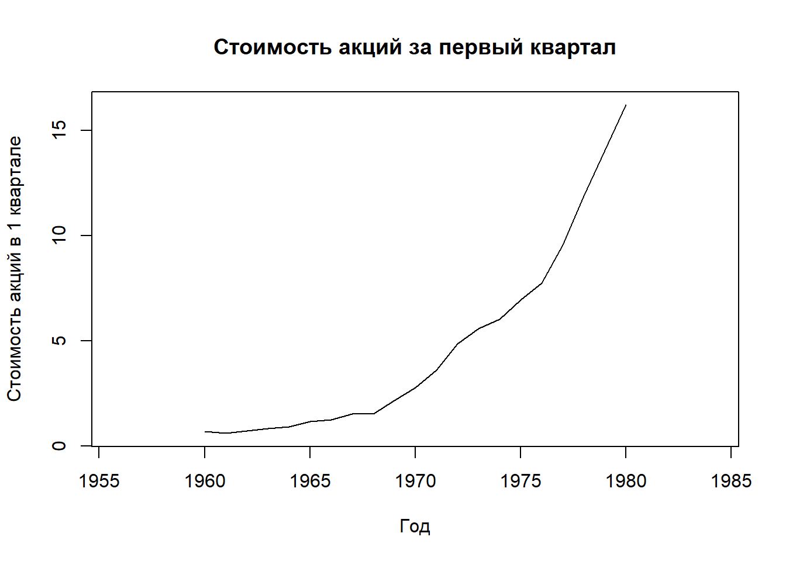
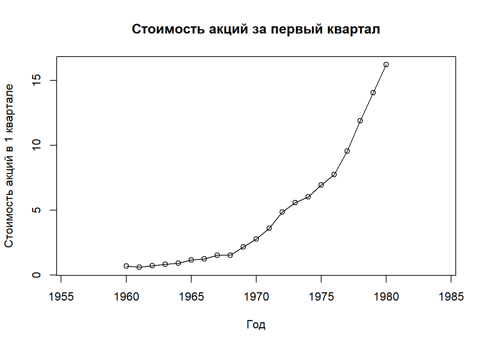
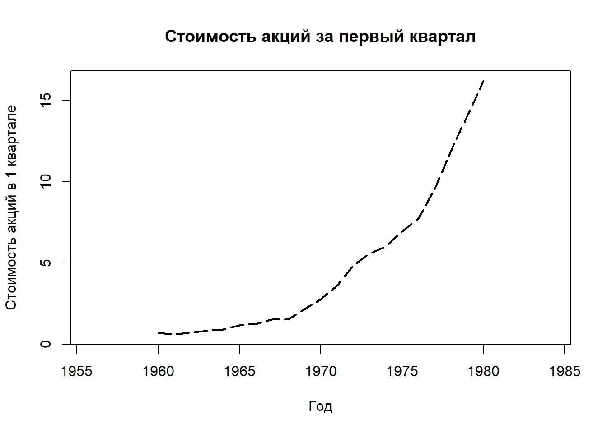
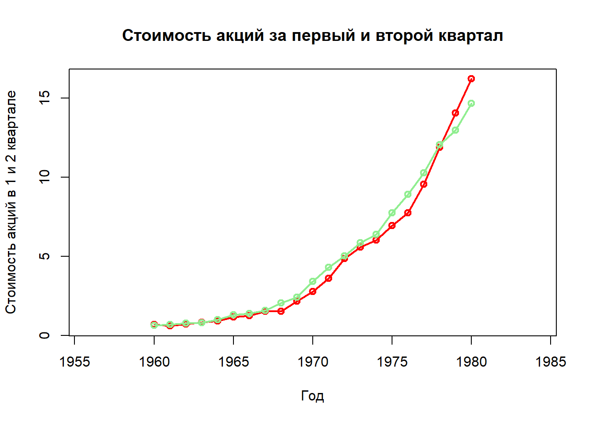
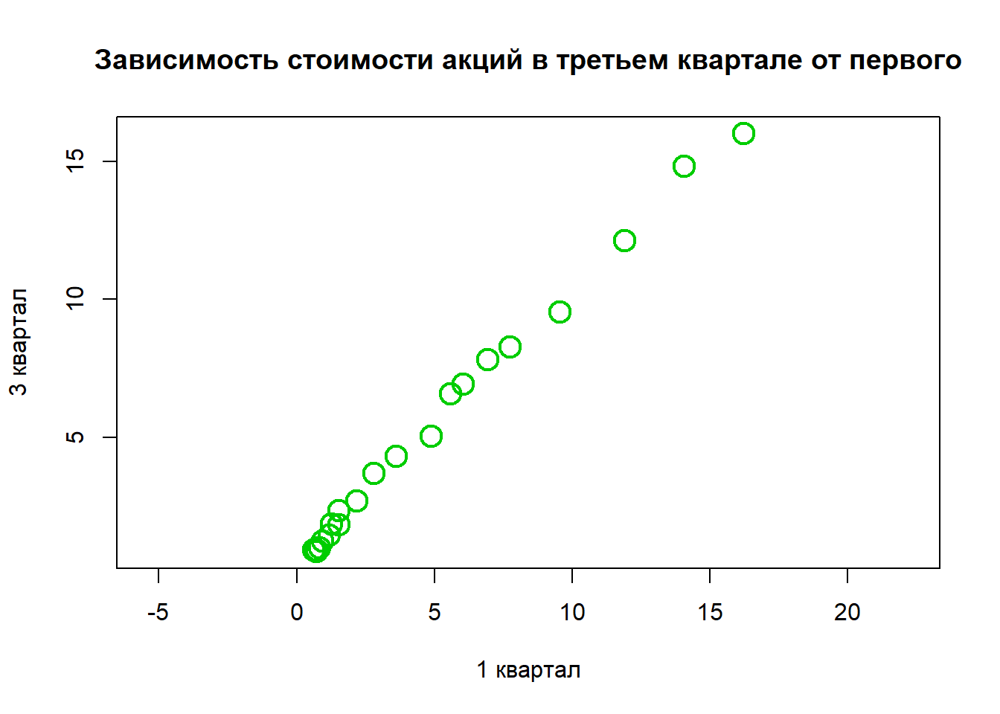
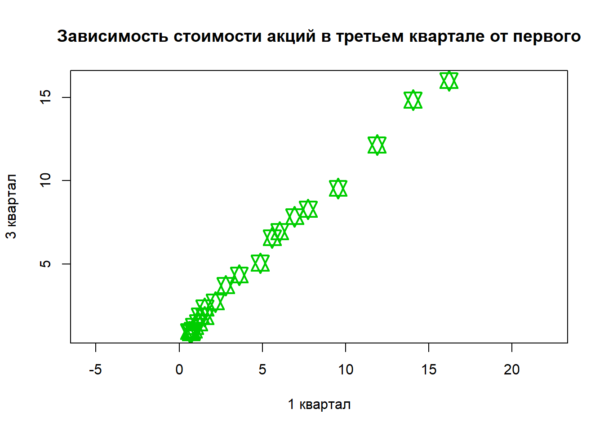
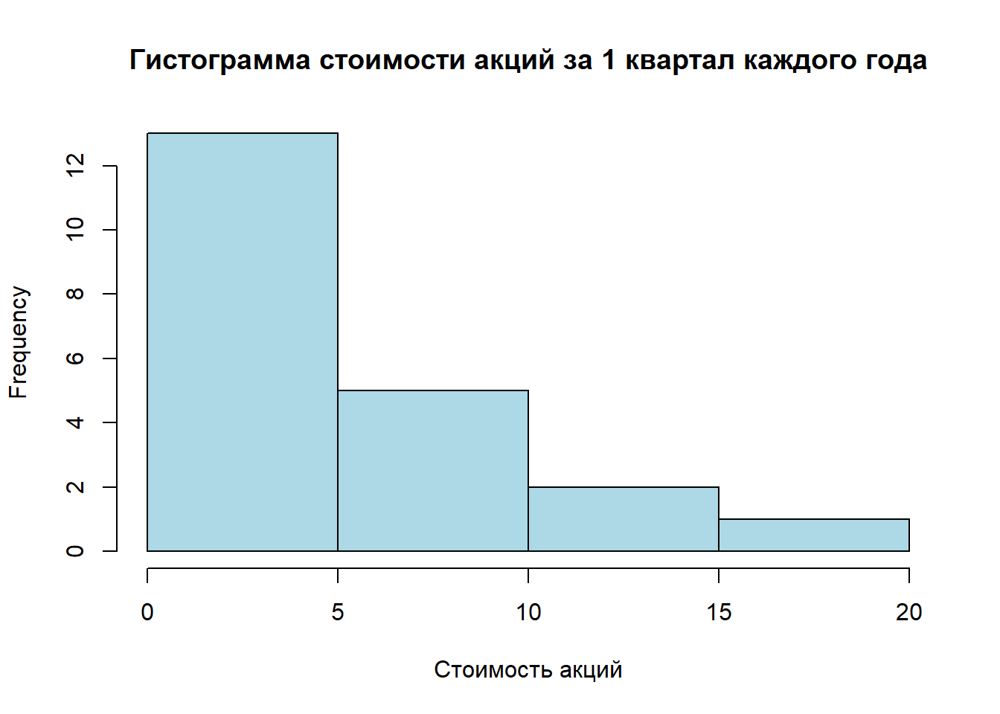
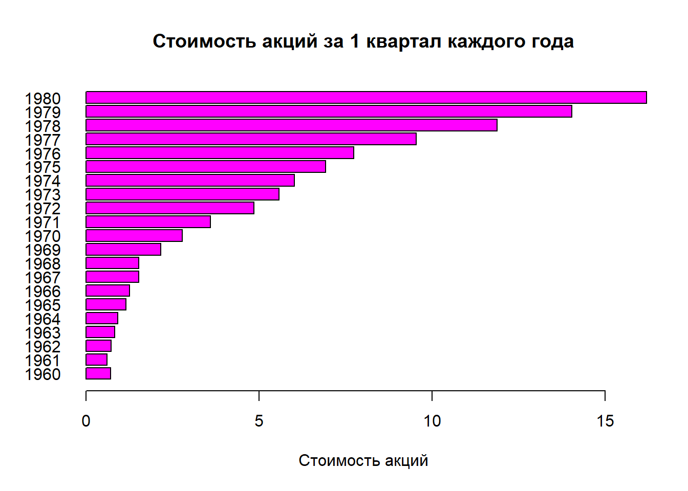

5 Часть 5 Базовая графика
Мы разобрали все основные темы, необходимые для качественной первичной обработки датасета, но есть еще кое-что, без чего ни один аналитики и Data Scientist никак не сможет обойтись - визуализация. Язык R дает огромные возможности для построения графиков: и базовая двумерная графика, и продвинутая визуализация, и анимация, и 3D-графика, и форматирование таблиц, и многое-многое другое. Все это позволяет:
- делать правильные выводы, так как не всегда удобно ориентироваться только на числа
- представлять результаты своей работы коллегам и начальникам
- получать удовольствие от процесса, так как это красиво :)
Для начала, естественно, мы начнем с базовых графических возможностей, которые доступны в стандартном пакете. Пусть Вас не смущает слово “базовые” - они не такие простые и примитивные как кажутся, и с их помощью можно строить вполне сносные визуализации!
5.1 Линейные графики, диаграмма рассеяния, совмещение графиков
5.1.1 Линейные графики
Чаще всего при работе с базовой графикой Вам придется сталкиваться с функцией plot(). Именно она позволяет графически отобразить зависимость одной переменной от другой, а это и лежит в основе большого количества визуальных элементов: например, линейных графиков или scatter plots (диаграмм рассеяния).
Давайте обсудим, какие агрументы можно задать функции plot(), чтобы настроить нужную нам графику.
x- координаты точек независимой переменнойy- координаты точек зависимой переменнойtype- тип графика (точечный график, линейчатый и так далее), об этом подробнее чуть нижеmain- заголовок графикаsub- подзаголовок графикаxlab- подпись осиxylab- подпись осиyasp- соотношение сторон y/x (регулировка масштаба)- прочие графические параметры, подробнее в
?par
Лучше всего такие прикладные вещи изучать на примерах, так что давайте подгрузим стандартный датасет JohnsonJohnson и построим линейный график: как менялась стоимость акций JohnsonJohnson за период 1960 – 1980 в первом квартале.
library(tidyr) #загружаем tidyr для подготовки данных
library(timetk) #загружаем специальный пакет для преобразования timeseries в tibble
data <-
tk_tbl(JohnsonJohnson) %>% #переводим формат timeseries в tibble
separate(index, into = c("year", "quarter")) %>% #разбиваем образовавшийся столбец index на 2: год и квартал
spread(quarter, value) #формируем из признака "квартал" столбцы таблицы
plot(x = data$year,
y = data$Q1,
main = "Стоимость акций за первый квартал",
asp = 1,
xlab = "Год",
ylab = "Стоимость акций в 1 квартале",
type = "l")
Мы построили самый обычный линейный график; добавили на него заголовок, подписи к осям, указали масштаб. В принципе, ничего сложного - все достаточно понятно.
Давайте теперь попробуем поварьировать параметр type - тип графика. Какие вообще основные типы могут нам встретиться?
p- точкиl- линииb- точки и линииc- как иb, но без точекo- точки на линияхs- ступенькиh- горизонтальные линииn- без построения графика
Вот, для примера укажем параметр o в нашем графике.
plot(x = data$year,
y = data$Q1,
main = "Стоимость акций за первый квартал",
asp = 1,
xlab = "Год",
ylab = "Стоимость акций в 1 квартале",
type = "o")
Тот же самый график можно было построить и не указывая агрументы x и y в явном виде, а указав функциональную зависимость (т.е. как y зависит от x).
plot(data$Q1~data$year,
main = "Стоимость акций за первый квартал",
asp = 1,
xlab = "Год",
ylab = "Стоимость акций в 1 квартале",
type = "o")Помимо типа графика, мы имеем возможность менять еще толщину и тип линии с помощью параметров lwd и lty, соответственно. С толщиной все понятно - этот параметр указывается числом (не обязательно целым) и чем больше число, тем толще линия. А для lty раскладка такая:
lty = 1- сплошная линияlty = 2- прерывистая линияlty = 3- точечная линияlty = 4- чередование точек и тиреlty = 5- длинные прерывистые тиреlty = 6- чередование длинного и короткого тире
Давайте для примера сделаем предыдущий график с type = 'l' и добавим толщину, а тип линии сделаем длинные прерывистые тире.
plot(data$Q1~data$year,
main = "Стоимость акций за первый квартал",
asp = 1,
xlab = "Год",
ylab = "Стоимость акций в 1 квартале",
type = "l",
lwd = 2,
lty = 5)
5.1.2 Совмещение графиков
Для совмещения графиков с использованием базовых инструментов R необходимо следовать общему принципу: нарисовать первый график с помощью plot(), а потом наложить дополнительные ряды с помощью points() и lines. Есть и еще один вариант - можно создать пустой график с помощью plot(), а потом добавить все ряды отдельно.
Использовать функции points() и lines очень просто - они, фактически, выполняют такой же функционал, что и plot(), просто в более упрощенном виде: points() строит только точки, а lines только линии.
Давайте добавим на наш график данные еще за второй квартал и разделим два графика цветом, чтобы не путать их.
plot(data$Q1~data$year,
main = "Стоимость акций за первый и второй квартал",
asp = 1,
xlab = "Год",
ylab = "Стоимость акций в 1 и 2 квартале",
type = "o", #строим график "точки на линии"
lwd = 2,
col = 2) #задаем цвет 2
#строим точки за 2 квартал, цвет делаем "lightgreen"
points(data$year, data$Q2, lwd = 2, col = "lightgreen")
#строим линию за 2 квартал, цвет делаем "lightgreen"
lines(data$year, data$Q2, lwd = 2, col = "lightgreen")
Таким образом, мы наложили 2 графика на один “холст” и при этом они идентичны с точки зрения внешнего вида. Совмещать и комбинировать графики при анализе данных нужно постоянно - по-другому не получится делать качественные выводы. В продвинутой графике, которую мы будем рассматривать позже, это делать намного удобнее, но для небольших задач и базовой графики вполне хватит: Вы сами видите, ничего сложного тут нет.
5.1.3 Диаграмма рассеяния
На самом деле, мы уже умеем строить scatter plots. Фактически, это график, который позволяет установить зависимость одной переменной от другой, если они не связаны явным образом. Например, в предыдущем случае, очевидно, что стоимость акций зависит от года - ведь это эволюционный процесс. А есть ли зависимость между стоимостью акицй в первом и третьем квартале каждого года? На этот вопрос позволяет ответить диаграмма рессеяния - по факту, обычный точечный график:
plot(data$Q3~data$Q1,
main = "Зависимость стоимости акций в третьем квартале от первого",
xlab = "1 квартал",
ylab = "3 квартал",
asp = 1,
col = 3,
lwd = 2,
cex = 2) 
Вы видите, что точки выстроились практически в прямую линию, что свидетельствует о сильной связи между переменными (что, конечно же, в данном примере логично).
Хотелось бы обратить Ваше внимание на новый параметр, который мы до этого не использовали - cex. Он отвечает за размер точки. Еще один интересный параметр - pch, он регулирует тип точки. Что это значит? Это значит, что точка может быть совсем не точкой, а, например, звездочкой, квадратиком или значком @. Подробное описание можно найти в ?pch, а мы проиллюстрируем примером:
plot(data$Q3~data$Q1,
main = "Зависимость стоимости акций в третьем квартале от первого",
xlab = "1 квартал",
ylab = "3 квартал",
asp = 1,
col = 3,
lwd = 2,
cex = 2,
pch = 11)
5.2 Гистограммы
Итак, точечные и линейные графики мы обсудили, теперь пора поговорить о еще одном крайне распространенном визуальном элементе - гистограмме.
Гистограмма распределения показывает, как измеряемая величина распределена по своим значениям (т.е. все возможные значения величины разбиваются на интервалы и вычисляется, сколько в каждый интервал попадает значений).
Основные параметры, которые Вам понадобятся при работе с hist() - это параметр breaks для настройки ширины столбца и col для задания цвета. На самом деле, у функции hist() намного больше параметров, но мы сейчас их рассматривать отдельно не будем - подробнее (традиционно) можно узнать в ?hist.
hist(data$Q1,
col = "lightblue",
breaks = seq(0, 20, 5),
xlab = "Стоимость акций",
main = "Гистограмма стоимости акций за 1 квартал каждого года")
Обратите внимание - мы сюда также добавили заголовк графика и подпись к оси x. Гистограмма - вещь обычно достаточно утилитарная и служит для проверки своих предположений/генерации промежуточных выводов, поэтому ее форматированию редко уделяют много внимания. Но если вдруг возникнет необходимости, то даже с помощью стандартных возможностей R Вы сможете построить визуально приятную гистограмму, которую не стыдно будет показать руководителю.
5.3 Столбчатые графики
Barplots отображают числовые данные в виде “столбиков”. Это часто бывает полезно - например, когда нужно наглядно увидеть соотношение между величинами, сравнить несколько показателей или просто представить динамику какого-то процесса (как бы альтернатива обычному линейному графику).
Построение столбчатых графиков происходит с помощью одноименной функции barplot(). те аргументы, которые мы уже разобрали, повторно проговаривать не будем, а сосредоточимся лучше на некоторых специфичных аргументах. Например, names.arg для озаглавливания столбцов на графике, horiz для изменения ориентации или las для форматирования подписей.
barplot(data$Q1, #строим barplot по стоимости акций за 1 квартал каждого года
names.arg = data$year, #в качестве подписей выбираем год
horiz = TRUE, #делаем горизонтальную ориентацию
las = 1, #делаем подписи года строго горизонтальными, чтобы они влезли в график
main = "Стоимость акций за 1 квартал каждого года",
xlab = "Стоимость акций",
col = 6) 
Попробуйте у себя поварьировать параметры - если Вы, например, уберете las = 1, то подписи либо перестанут вмещаться на график, либо будут отображаться частично. Параметр las позволяет разместить подписи горизонтально, что делает график намного более симпатичным и читаемым.
Вообще параметр las принимает следующие значения:
0- всегда параллельно осям, так стоит по умолчанию1- всегда горизонтальные подписи2- всегда перпендикулярно подписи3- всегда вертикальные подписи
5.4 Заключение
В этом уроке мы обсудили базовую графику языка R. Естественно, возможности намного шире: Вы можете строить круговые диаграммы, делать подписи данных, добавлять легенды и многое-многое другое. Однако, мы не стали включать это в этот урок по одной простой причине - все это уже более сложные конструкции, и на мой взгляд, намного лучше будет работать с ними уже с использованием продвинутой графики пакета ggplot2. Той информации, которую мы разобрали тут, вполне достаточно, чтобы в процессе анализа строить простые графики лично для себя. Более же сложные вещи лучше делать сразу хорошими инструментами - зачем пахать огромное поле вручную, если есть специальная техника?…